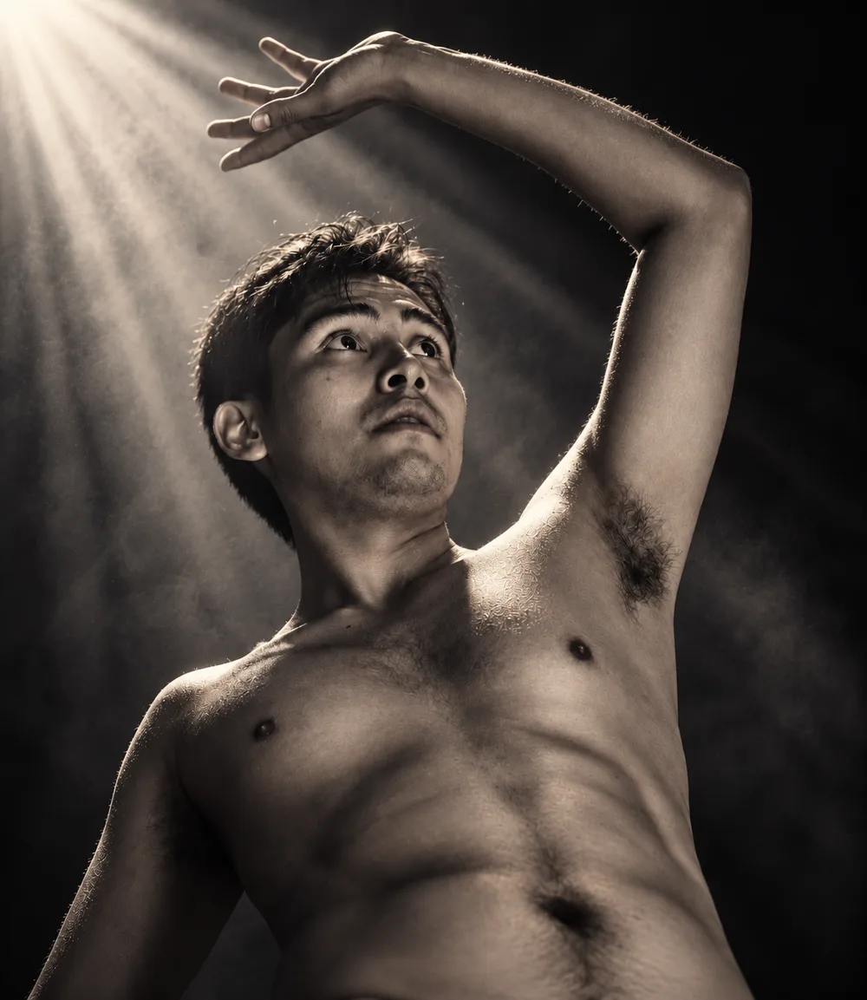
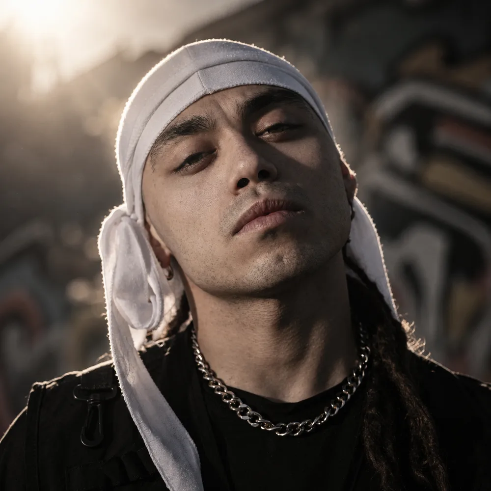

Creemos que el arte escénico requiere tanto de sensibilidad interpretativa como de una estructura operativa sólida para transformar una idea en una experiencia memorable.
01 / EL PRESENTE
Misión
Excelencia artística con rigor logístico.
Diseñar, dirigir y producir espectáculos escénicos y eventos culturales integrales —desde teatro musical y físico hasta batallas de danza urbana y activaciones temáticas—, articulando equipos creativos con rigor logístico y operativo para garantizar montajes de calidad, inclusivos y de alto impacto para todo tipo de audiencias.
02 / EL FUTURO
Visión
Un referente de gestión cultural integral.
Consolidarnos como un referente de dirección y gestión cultural integral a nivel nacional e internacional, liderando producciones que fusionen el teatro físico, la danza y el lenguaje audiovisual con una gestión operativa de excelencia y enfoque de mediación comunitaria.
03 / LO QUE NOS SOSTIENE
Valores
Un puente entre la visión creativa y la viabilidad ejecutiva.
Liderazgo colaborativo. Coordinación empática y efectiva de elencos y equipos técnicos bajo presión.
Rigor operativo y logístico. Planificación escénica metódica, resolución proactiva de contingencias y cumplimiento de estándares de sala.
Compromiso artístico. Búsqueda constante de rigor estético, expresividad física y coherencia narrativa en cada montaje.
Inclusión y mediación. Accesibilidad cultural y trabajo con audiencias y equipos que abrazan las divergencias culturales, funcionales y sociales.
Versatilidad escénica. Tránsito solvente entre la actuación, la dirección, la danza y la producción ejecutiva.
Resolvemos la desconexión habitual entre la visión artística y la rigurosidad técnica, logística y presupuestaria: espectáculos entregados en tiempo y forma, con elencos coordinados y recursos optimizados.
04 / SOBRE NOSOTROS
Quienes dan cuerpo a las ideas.
Liderazgo horizontal, escucha activa, coordinación metódica de ensayos y gestión eficiente de recursos técnicos y humanos.
DIRECTOR EJECUTIVO
Daniel Núñez Ríos

Transformo visiones creativas en experiencias escénicas sólidas y de alto impacto.
Vinculado al escenario desde 2013, entendí que la potencia del teatro radica en su capacidad de conectar con la audiencia, pero que esa magia solo se sostiene sobre una producción organizada y precisa.
Mi paso por musicales de gran formato, teatro físico y eventos masivos me enseñó que la dirección artística y la coordinación logística son dos caras de la misma moneda: liderar bajo presión, resolver contingencias en tiempo real y guiar a elencos y equipos técnicos hacia un objetivo común.
Trayectoria
Dirección y producción de Inconsistencia (teatro físico) y Skill Battles (danza urbana) — JD Producciones, 2024–2026.
Dirección y producción general de musicales a gran escala: Tarzán, El Rey Simba, La Pérgola de las Flores, y 4 temporadas de Aventuras Nocturnas en Buin Zoo (2019–2022) con Productora Landaeta Cano.
Mediación e inclusión artística junto a Fundación Miradas Compartidas (2015–2018).
Credenciales
Actor titulado — DUOC UC (2018).
+10 años de experiencia en artes escénicas y más de 8 montajes y temporadas dirigidos y producidos.
Principios: respeto absoluto por el tiempo y proceso creativo del elenco, puntualidad operativa, adaptabilidad y empatía con las audiencias.
DIRECTOR OPERATIVO
José Garrido Orellana

Llevo el freestyle a la escena: cuerpo, calle y teatro en un mismo movimiento.
Me formé como actor en DUOC UC de San Carlos de Apoquindo, siempre atraído por el trabajo físico. Mientras estudiaba fui intérprete en pasacalles y parte de compañías emergentes de máscaras y de los musicales de Fundación Miradas Compartidas; ahí entendí que el cuerpo cuenta antes que la palabra.
Al egresar profundicé en la danza: me integré a DOYOH Danzas Urbanas y a la cultura hip hop como freestyler, donde sigo hasta hoy. Desde entonces me muevo entre el teatro, los grandes escenarios y el cypher, como bailarín, coreógrafo, host y jurado de batallas.
Trayectoria
Coreografía de Inconsistencia (teatro físico) y producción de Skill Battles (danza urbana) — JD Producciones.
Backup dancer de Ana Tijoux (Bailando sola aquí, Movistar Arena, 2024), Lucky Brown (Los Galácticos, Movistar Arena, 2024) y Aly Mayely (Enfermos del Rap, Teatro Caupolicán, 2023).
Animador del evento nacional Red Bull Dance Your Style (Estación Mapocho, 2024), host de las batallas Fundabots (Espacio Matta, 2023) y Ponle Play (DOYOH, 2024), jurado en Nouns Dance Battles (Teatro Víctor Jara, 2024) y entrevistador de MUBS en World of Dance, RDYS Chile y AlvaGroove.
Teatro musical: Grease Brillantina, Los 80’s y Super Down, el musical y la película, con Fundación Miradas Compartidas (2016–2021); Félix en Encanto el musical y De Madagascar el musical (2022); Peter Pan y La fierecilla domada con Compañía Run Run (2019).
Danza y teatro: 70% Agua (Compañía Inefables, 2022), La liturgia de los pantalones bien puestos (Cía. Cuarzo, 2018) y Ellos (Compañía Los Indignados, 2018).
Credenciales
Estudios de actuación — DUOC UC (2014–2019).
Formación en danza butoh — Universidad Mayor (2019).
Formación en hip hop — DOYOH Danzas Urbanas (2019–actualidad).
Compañías: Teatro Run Run, Miradas Compartidas, Cía. Cuarzo, Cía. Pájaro en la Cabeza, Piedra Angular, Cía. Inefable, Reason, Elephant Color 9.
Principios: escuchar antes de moverse, honestidad en el cuerpo, respeto por la cultura que me formó y que nadie quede fuera del círculo.
TRABAJEMOS JUNTOS
Tu próximo montaje empieza aquí.
Agenda una reunión o solicita una propuesta para proyectos de dirección, producción teatral o gestión de eventos.